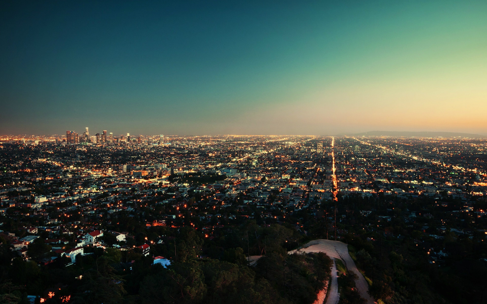
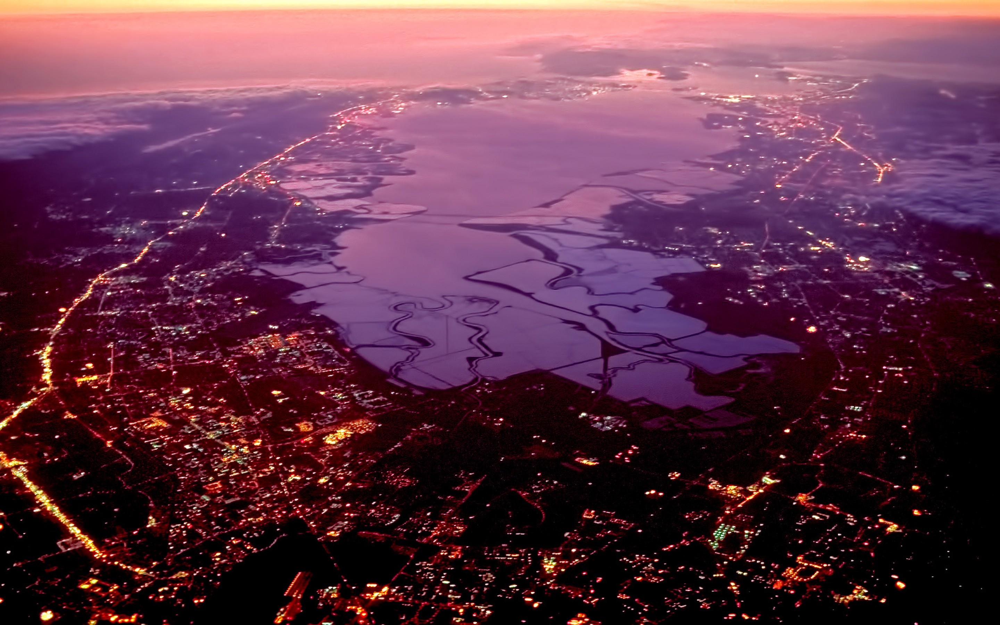
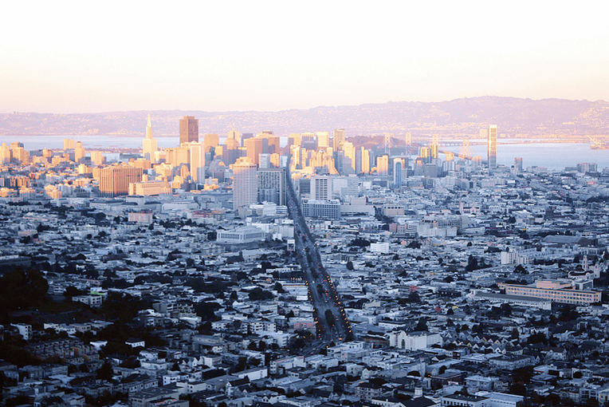

California was first settled by various Native American tribes before being explored by a number of European expeditions during the 16th and 17th centuries. It was then claimed by the Spanish Empire as part of Alta California in the larger territory of New Spain. The California Gold Rush starting in 1848 led to dramatic social and demographic change, with large-scale immigration from the east and abroad with an accompanying economic boom.
California's economy is centered on technology, finance, real estate services, government, and professional, scientific and technical business services.
California is the largest producer of almonds in the world. The Golden State produces over 80% of the global production of almonds!
Los Angelesthe second-largest city in the U.S. |
San Josefirst town in the Spanish colony |
San Franciscocultural center of California |